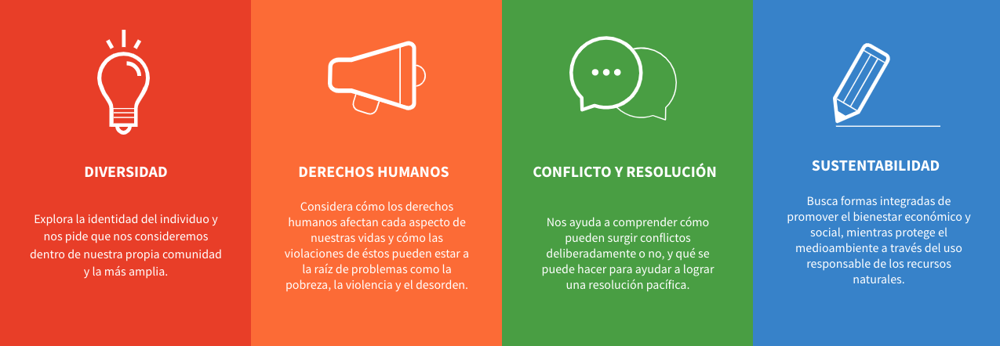

CISV (Children's International Summer Villages) es una organización global fundada en 1950 por la psicóloga estadounidense Doris Allen tras la Segunda Guerra Mundial.
Se centra en la educación y la inspiración para la paz entre niños y jóvenes, fomentando la amistad, la cooperación y el entendimiento intercultural.
Contraria a la idea de limitar la educación para la paz a los adultos, Allen abogaba por la influencia temprana en los niños como clave para la paz duradera.
CISV, actualmente se encuentra en 66 países, ofrece programas educativos y experiencias interculturales a jóvenes, cultivando habilidades y conocimientos para formar Ciudadanos Activos Globales comprometidos con la paz y el aprendizaje experiencial.
“Educar e inspirar acciones por un mundo más justo y pacífico.”
4 Áreas de Contenido Educacional:

¿Qué es un Nacional Camp ?
Los Nacional Camp son instancias dentro de CISV para tener encuentros a nivel nacional y llevar a cabo actividades que normalmente realizamos en summer camp internacionales pero con nuestra comunidad CISV Chile . Tiene una duracion de 8 días y se realiza en Farellones.
Tu Primer paso para conocer CISV
El Nacional Camp es una gran instancia para conocer CISV, en nuestros Summer Camps nacionales realizamos actividades y dinamicas que que normalmente llevamos acabo en nuestros programas internacionales.Es una gran oportunidad para familiarizarte con la organización y nuestras comunidad.

Del 7 al 14 de Enero del 2024
Lugar: Farellones
TEMA 2024: MERAKI
“La trascendencia la aportamos nosotros, poniendo el alma en nuestras acciones y en las cosas que hacemos a diario.”
Nacional Camp
Contáctanos
Inscribete